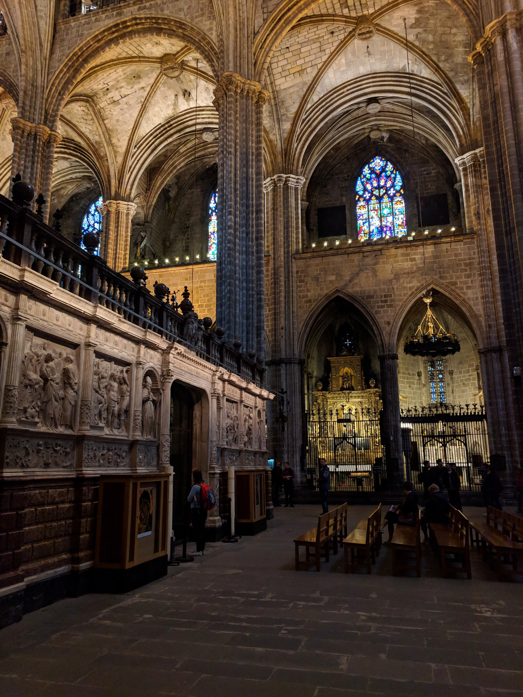
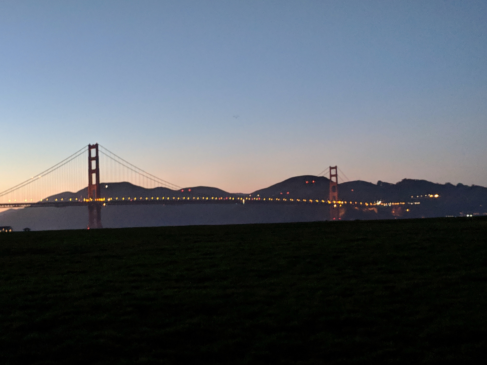
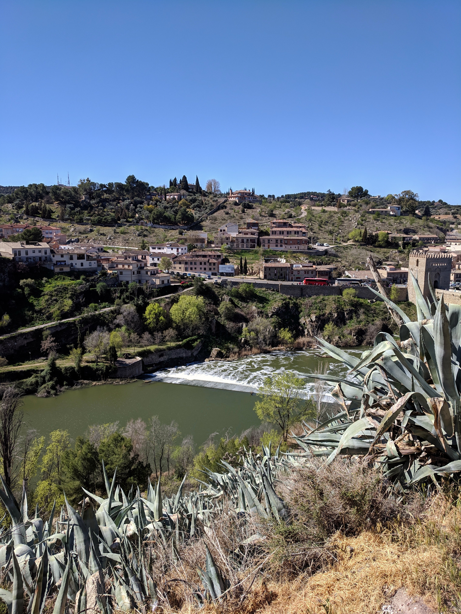
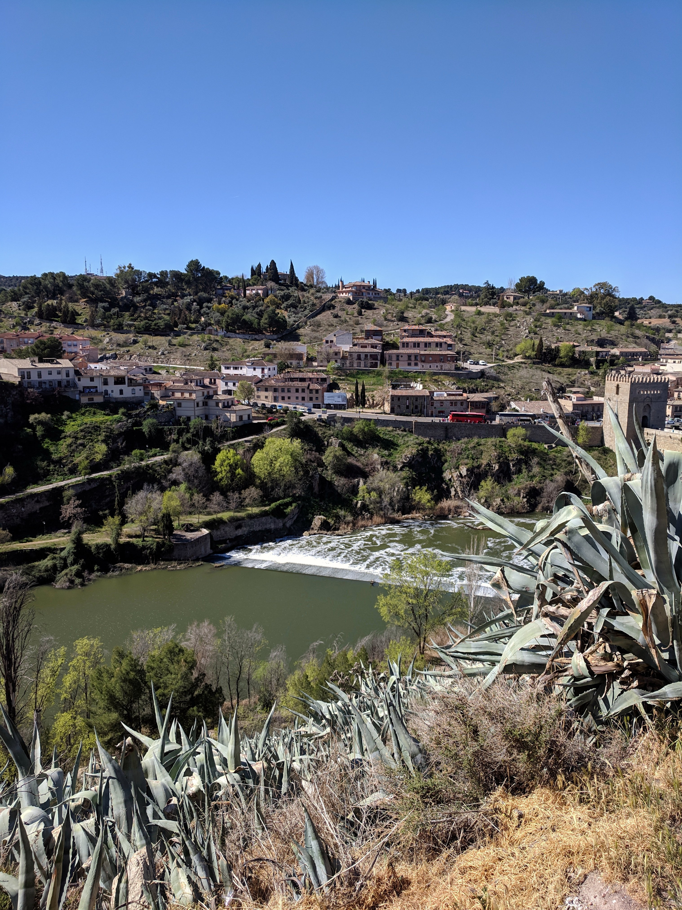
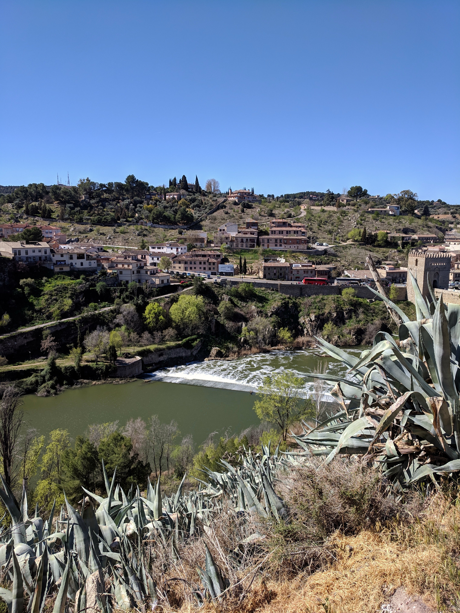

All my shared photos can be found on my Flickr!
Photos are under a Creative Commons Attribute license (CC BY 2.0)
You are free to share and adapt my photos, even commercially, provided you give appropriate credit.
For more details click here.




 

